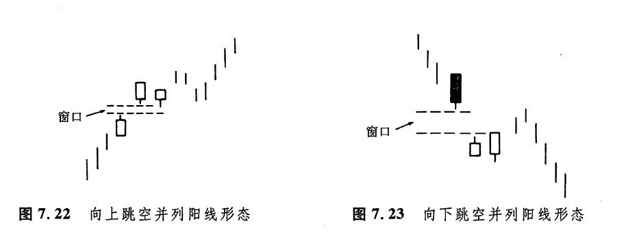
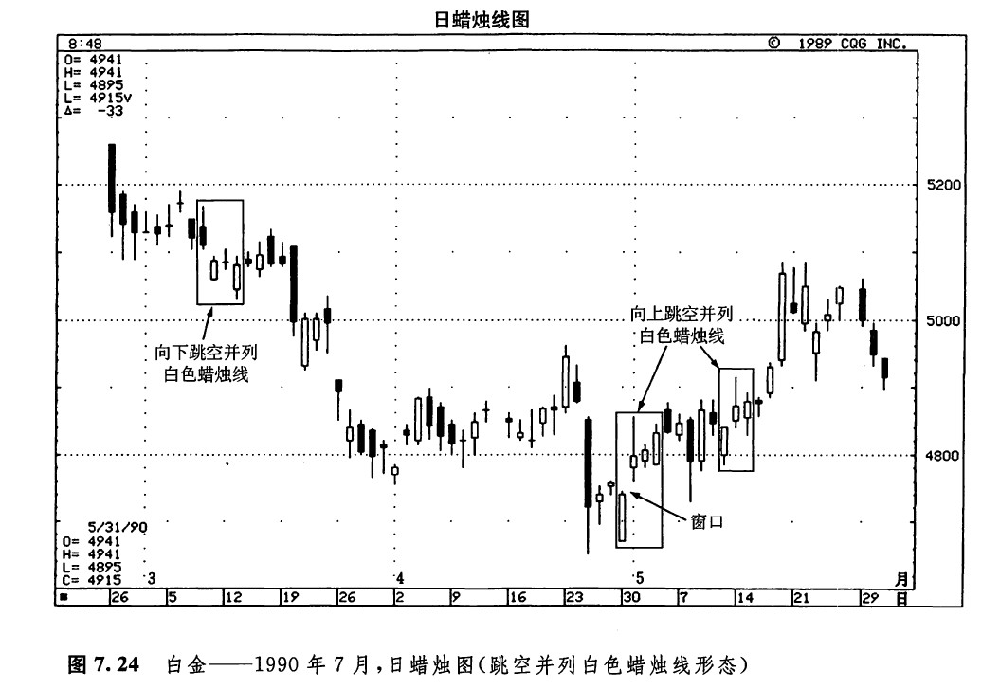

在上升趋势中，先出现了一根向上跳空的白色蜡烛线，随后又是一根白色蜡烛线，并且后面这根线与前一根大小相当，两者的开市价也差不多处在同样的水平上，这样就形成了一种看涨的持续形态。这种二蜡烛线形态称为向上跳空并列白色蜡烛线形态（或者称为向上跳空并列阳线形态，如图7.22所示）。如果市场收市在并列白色蜡烛线的最高点之上，则意味着下一波上涨行情即将展开。
上面介绍的这种并列白色蜡烛线形态是很少见的。不过，更少见的还有向下跳空的两根并列白色蜡烛线。这类形态称为向下跳空并列白色蜡烛线形态（如图7.23所示）。在下降趋势中，这类并列的白色蜡烛线也构成了一个持续形态。这就是说，当这类形态出现时，价格将继续走低。为什么这种形态不是看涨的（正如在向上跳空的形态中那样），而是看跌的呢？这是因为在下降的市场中，这两根白色蜡烛线是由空头平仓过程造成的。一旦空头平仓的过程完成了，价格就要进一步下跌。这类向下跳空并列白色蜡烛线形态之所以特别罕见，其原因不难理解。在下降趋势中，当出现向下跳空时，如果形成跳空的蜡烛线是→根黑色蜡烛线，当然比一根白色蜡烛线自然得多。如果在下跌的市场行情中，先出现了一根向下跳空的黑色蜡烛线，后面又跟了一根黑色蜡烛线，并且后者的收市价比前者低，那么市场将开始下一轮价格下跌过程。

如图7.24所示，3月上旬出现了一个向下跳空并列白色蜡烛线形态。在下降趋势中出现这种形态的理论解释是，空头正在进行获利平仓。由此可见，这个形态只是为市场的下降过程提供了一个短暂的休整机会。在本例中，我们见到的正是这样的情况：市场在经过了一段时间的调整以后，又恢复了下跌趋势。这个例子并不是一个理想的向下跳空并列阳线形态，因为其中两根白色蜡烛线的开市价并不处在同样的水平，而且在两根白色蜡烛线之间还间隔了一个交易日，虽然如此，它的图形与向下跳空并列白色线形态还是可以相提并论的。
另外，在图7.24所示的实例中，还有两个向上跳空并列阳线形态。如果这类形态出现在较低的价位上，则具有看涨的意味。在图示的第一个向上跳空并列白色蜡烛线形态中，三根白色蜡烛线的开市价差不多都在同一个水平上。在该形态之后，市场经历了一个短暂的向下回撤过程，并且在其中的5月8日，一度稍稍向下突破了该形态中窗口处的水平，但市场立即从此处向上反弹。第二个向上跳空并列阳线形态也构成了一个看涨信号。本形态充分体现了向上跳空并列白色线形态的典型特点，为之后的市场变化提供了一个坚实的立足点。

下一篇：上升三法和下降三法形态
上一篇：高价位和低价位跳空突破形态
copyright @ 2018 制作：汉钛电线，Hingtak Wire & Cable LLC